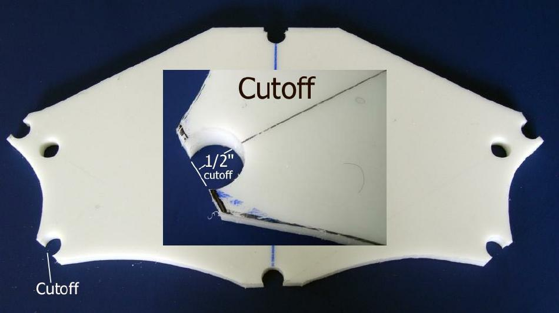

| Cross Sections | Menu Previous Page Next Page |
|  | |
|
Hole Cutoff - Cut along the cutoff line to create the "snap-on" connections. The opening is now 1/2". The center line "permanent marker ink" has been removed with a paper towel. If the lines prove difficult to remove, wipe them off using MEK.
Note - There is excess HDPE at each cutout. This material adds strength to the these area. After the frame is completed, each cutout area will be rounded with a file to create a smooth transition for the PVC skin. |
|